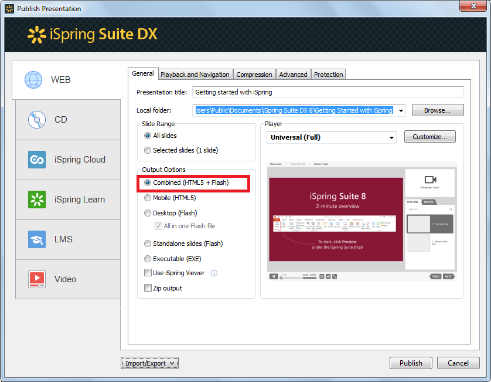
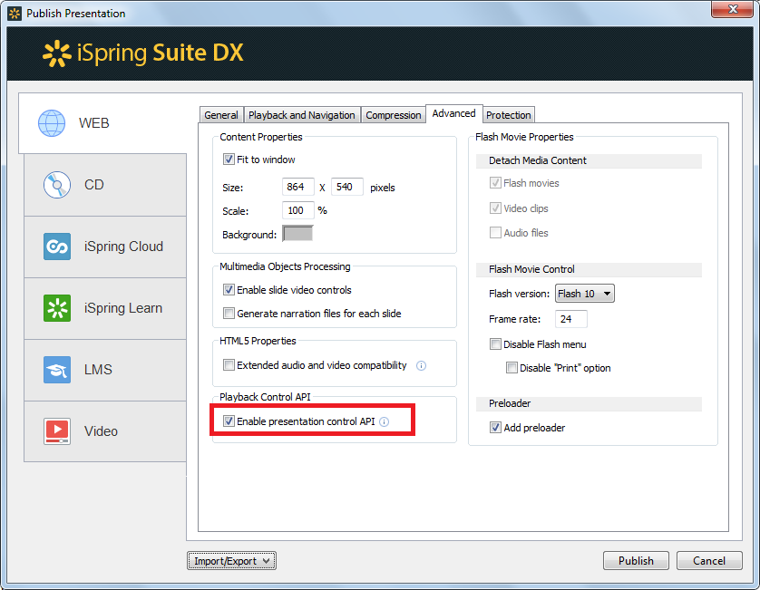

Создать HTML-страницу с плейсхолдером для размещения презентации:
<!DOCTYPE html>
<html>
<head>
<meta charset="utf-8">
<meta name="viewport" content="width=device-width,initial-scale=1,maximum-scale=1"/>
<title>Your web page title</title>
</head>
<body>
<h2>Here will be your presentation</h2>
<!-- Presentation placeholder -->
</body>
</html>
Опубликовать презентацию в Combined-режиме с использованием плеера None. В этом режиме будут отключены все компоненты навигации плеера
Убедиться, что на вкладке Advanced установлена опция Enable presentation control API. Также запоминаем размеры слайда (864x540 пикселей).
Создать каталог presentation рядом с файлом index.html. Скопировать в него файлы опубликованной презентации.

При помощи тэга iframe встраиваем презентацию внутри страницы. В HTML-стилях задаем ширину и высоту фрейма презентации (864 * 540 пикселей), а также наличие рамки.
<!DOCTYPE html>
<html>
<head>
<meta charset="utf-8">
<meta name="viewport" content="width=device-width,initial-scale=1,maximum-scale=1"/>
<title>Your web page title</title>
<style>
#presentation {
width: 864px;
height: 540px;
border: 1px solid #000;
}
</style>
</head>
<body>
<iframe id="presentation" src="presentation/index.html"></iframe>
</body>
</html>
В результате презентация будет встроена внутрь указанного фрейма
Добавляем новый элемент - текстовое поле, которое будет отображать текущее состояние презентации. При помощи тэга script добавляем для страницы сценарий, в котором подключаемся к плееру и изменяем текст, в добавленном поле, при начале проигрывания презентации. В HTML-стилях задаем шрифт и расположение добвленного текстового поля.
<!DOCTYPE html>
<html>
<head>
<meta charset="utf-8">
<meta name="viewport" content="width=device-width,initial-scale=1,maximum-scale=1"/>
<title>Your web page title</title>
<style>
#presentation {
width: 864px;
height: 540px;
border: 1px solid #000;
}
#state {
float:left;
font: 18px 'Arial', sans-serif;
margin-left: 50px;
}
</style>
</head>
<body>
<iframe id="presentation" src="presentation/index.html"></iframe>
<p id="state">Presentation is not running<>
<script>
var state = document.getElementById("state");
var ispringPresentationConnector = {};
ispringPresentationConnector.register = function(player)
{
state.innerHTML = "Presentation is running";
};
</script>
</body>
</html>